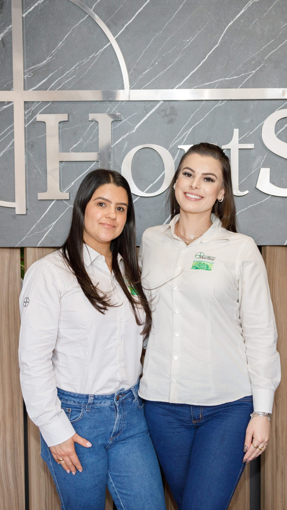
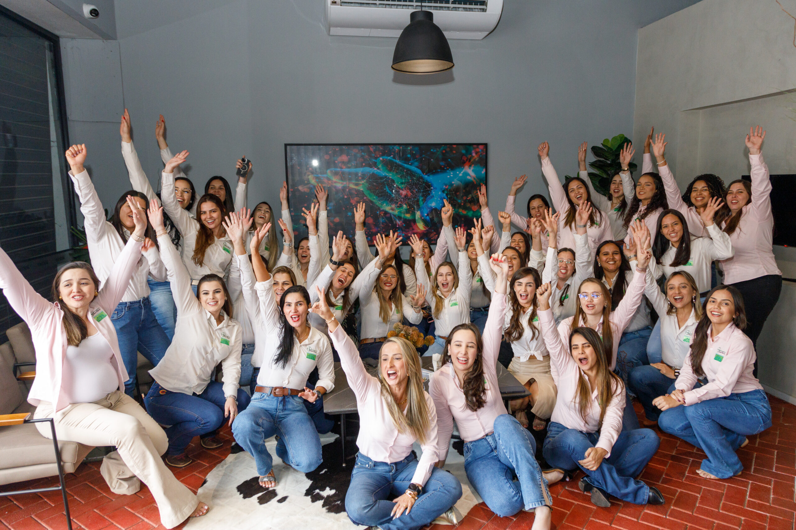

Inauguração do Novo Centro Administrativo da HortSoy

Novo Centro Administrativo da HortSoy
A Hortsoy celebra um novo capítulo em sua jornada com a inauguração do maior e mais moderno Centro Administrativo da empresa, localizado em Uberaba – MG. Esse espaço não é apenas um ambiente de trabalho; ele representa um compromisso profundo com o cuidado de pessoas e negócios, alinhando nossa missão de promover o crescimento sustentável do agronegócio.

Construímos o futuro do agronegócio com inovação e compromisso.
Pensado para fortalecer a colaboração e a inovação, o novo centro foi planejado com ambientes integrados que priorizam o bem-estar de nossos colaboradores. Espaços arejados, áreas de convivência, e estruturas que favorecem o diálogo refletem nossa crença de que cuidar das pessoas é fundamental para o sucesso dos negócios. Queremos que nossa equipe se sinta acolhida e inspirada, pois acreditamos que colaboradores motivados e valorizados são a base de um atendimento de excelência e de relações duradouras com nossos parceiros e clientes.
Nosso espaço inspira colaboração e bem-estar todos os dias.
Além disso, o centro administrativo foi equipado com tecnologias de última geração, facilitando uma gestão mais eficiente e ágil dos processos, sempre com foco na transparência e na entrega de resultados concretos para o agronegócio brasileiro. Esse ambiente foi projetado para nos ajudar a atender as demandas do setor com maior rapidez, permitindo que continuemos a crescer e oferecer soluções inovadoras que façam a diferença na vida de nossos parceiros.

Valorizamos pessoas para fortalecer negócios.
Acreditamos que essa nova fase da Hortsoy representa não só um marco em nossa trajetória, mas também um compromisso renovado com o cuidado das pessoas e o avanço dos negócios, lado a lado. Estamos prontos para essa nova jornada e orgulhosos por poder compartilhar cada conquista com todos que fazem parte da nossa história.
Hortsoy: Crescendo com você, sempre.
Estamos prontos para essa nova jornada e orgulhosos por poder compartilhar cada conquista com todos que fazem parte da nossa história.